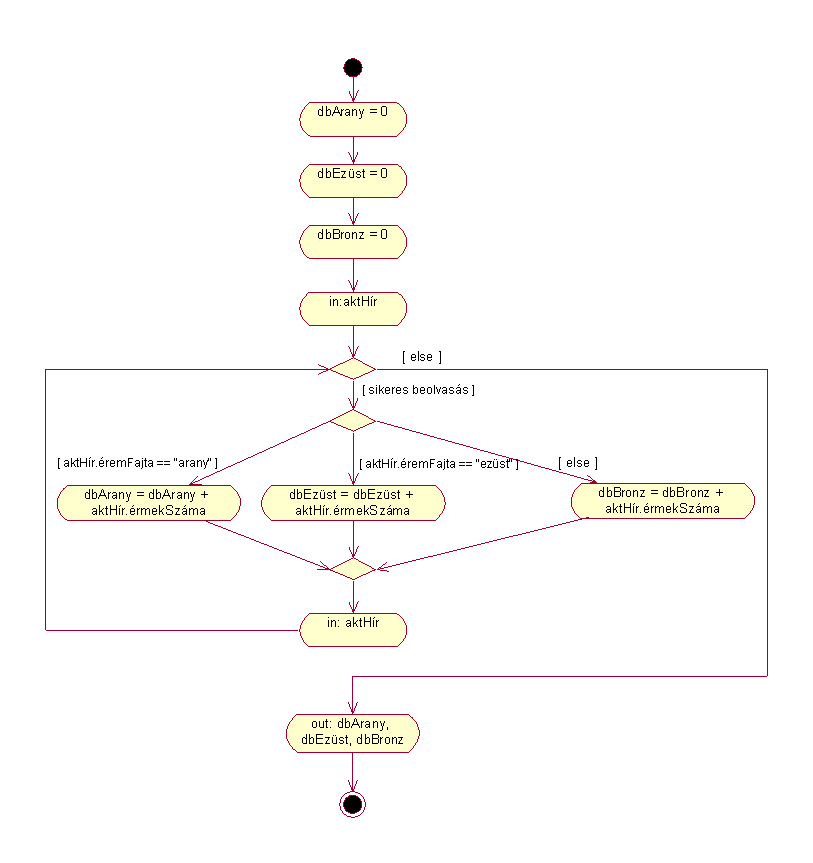

Angster Erzsébet: OO tervezés és programozás, Java I. kötet
Feladatmegoldások / 2. fejezet
Olimpia.html
Készítette: Andor Gergely, 2002.06.01.
-
aktHír: Hír(érmekSzáma: number, éremFajta:
String)
Egyszerre bejövõ információ, mely megadja hogy melyik fajta érembõl
("arany", "ezüst", "bronz") hányat
kaptunk.
-
dbArany,
dbEzüst, dbBronz: number
Arany-, ezüst-, illetve bronzérmek száma összesen.

olimpia()
dbArany = 0
dbEzüst = 0
dbBronz = 0
in: aktHír
while (sikeres beolvasás)
if aktHír.éremFajta == "arany"
dbArany = dbArany + aktHír.érmekSzáma
else if aktHír.éremFajta == "ezüst"
dbEzüst = dbEzüst + aktHír.érmekSzáma
else
dbBronz = dbBronz + aktHír.érmekSzáma
end if
in: aktHír
end while
out: dbArany, dbEzüst, dbBronz
end olimpia